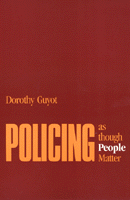

<body bgcolor="#FFFFFF" text="#000000" link="#0000FF" vlink="#CC0000" alink="#CC0000"><center><hr width="350" size="1" align="center" noshade>What makes a good police department?<hr width="350" size="1" align="center" noshade><p><a href="https://cdcshoppingcart.uchicago.edu/Cart/ChicagoBook.aspx?ISBN=9780877227557&&PRESS=temple" target="_top">Buy this book!</a> | <a href="https://cdcshoppingcart.uchicago.edu/Cart/Cart.aspx?PRESS=temple" target="_top">View Cart</a> | <a href="https://cdcshoppingcart.uchicago.edu/Cart/Cart.aspx?PRESS=temple" target="_top">Check Out</a></p><p></p></center><!--none//--><h1>Policing as Though People Matter</h1>
<h3>Dorothy Guyot</h3>
<P>cloth 0-87722-755-1 $51.50, Jan 91, <FONT COLOR=#990033>Out of Stock Unavailable</FONT>
<br>paper 0-87722-766-7 $34.95, Feb 91, <FONT COLOR=#990033>Available</FONT>
<BR> 448 pp
</P><BLOCKQUOTE><I>"This unique book is an important contribution to the field of policing. It incorporates the case study of organizational change in the Troy Police Department, a textbook on police administration, and a manifesto on police reform. Guyot intermingles these three aspects in a surprising and fascinating fashion by utilizing well-selected and diversified anecdotes. These anecdotes become classic ethnographies of police leadership that are not readily available in the literature currently dominated by street-officer perspectives. For anyone interested in the complexities of police leadership, this is a stimulating and provocatively written book."</I>
<br>&#151<b>Lawrence W. Sherman</b>, University of Maryland<I></I></BLOCKQUOTE>
<p>In this work, Dorothy Guyot asks: What makes a good police department? In analyzing the transformation of the police department in Troy, New York. she explains a set of standards by which the quality of police service can be judged and illustrates a way to improve services over the long run. Throughout her case study and analysis, Guyot asks penetrating questions about the performance of police departments. She maintains that when police officers are treated as professionals by their department, they will act professionally toward citizens. This examination of fifteen years of policymaking within a single department looks at policing as a complex social service in an urban environment.
<p>Rather than accepting the traditional "chain of command" authoritarian model of police administration, Guyot draws an analogy to hospital organization and suggests that the practitioner, whether a physician or a cop on the beat, performs the service with a tremendous amount of discretion. It follows that better management tactics at the police chief level as well as better employment policies will result in more responsible and dedicated policing by officers. The author demonstrates how, under the leadership of George W. O’Connor, the Troy P.D. changed from a backward department to one that promotes competence, as well as concern for citizens, among its individual officers.
<p>The book is organized by issues and provides a full picture of how upgrading can be achieved through clear and specific goals. Throughout this case study, Guyot provides many examples of the behavior of police officers on the street, to illustrate the differences made by restructuring the department.
<BR>&nbsp;<h2>Excerpt</h2><P>Excerpt available at <a href="http://www.temple.edu/tempress">www.temple.edu/tempress</a></p>
<BR>&nbsp;<h2>Contents</h2><P>
<p>List of Figures
<br>List of Tables
<br>Preface
<p><b>Part I: Service by Professional Police Officers</b>
<p>1. Two Transformations in Police Upgrading
<br><I>Police Work &#149
The Transformation toward Professional Police Administration &#149
The Transformation toward Professional Police Officers &#149
The Pace of the Two Transformations &#149
What Makes a Good Police Department? &#149
Overview of the Book</I>
<p>2. Overcoming Inertia
<br><I>Resistance to Change &#149
Critique from the Perspective of Professional Administrators &#149
Fear of Change &#149
The Commissioner &#149
Overcoming the Fear of Change &#149
Opportunities and Resources for Growth &#149
Civil Service and Union Impediments &#149
Leaving the Cowpath for New Roads &#149
Authority over Police</I>
<p>3. Patrol Officers: General Practitioners Who Make House Calls
<br><I>The Diverse Work of Patrol &#149
Skill in the Use of Discretion &#149
Police Service as Evaluated by Recipients &#149
Response Time as a Misused Performance Measure &#149
Consumer Demand as a Rough Measure of Consumer Satisfaction &#149
The Long, Hard Road to Open Exercise of Discretion</I>
<p>4. The Hospital Model
<br><I>Insights from Organization Theory &#149
An Overview of the Hospital Model &#149
The People Attracted to Police Work &#149
Increasing Individual Accountability &#149
Weak Departmental Accountability &#149
Increasing the Skills and Status of Police Officers &#149
Similarities between Policing and Public Health Medicine</I>
<p><b>Part II: Coping with Crime</b>
<p>5. Arrests
<br><I>Legal Arrests &#149
Proper Treatment of Prisoners &#149
A Broad Base of Public Involvement &#149
Arrest Performance &#149
Organizational Changes to Facilitate Burglary Arrests &#149
Court Outcomes of Arrest &#149
Using the Hospital Model to Produce New Patterns of Arrest</I>
<p>6. Solving Crime Problems
<br><I>The Crime Index as a False Performance Measure &#149
Preventing Crimes by Working with Youth &#149
Reducing the Access of Potential Offenders &#149
Crime Prevention through Work with Potential Victims Helping Victims</I>
<p>7. From Fear of Crime to Sense of Safety
<br><I>Wave of Fear &#149
Throwing Manpower at Crime &#149
A Building to Radiate Crime Prevention &#149
Crime Problems and Fear Problems &#149
Explaining the Sense of Safety from Criminal Attack &#149
A Conflict over Crime News &#149
Police Programs to Promote a Sense of Protection &#149
Friendly Relations to Promote a Sense of Protection</I>
<p><b>Part III: Police Power</b>
<p>8. Police Malpractice
<br><I>Instances of Police Malpractice &#149
Shortcomings of Disciplinary Systems &#149
Estimating Levels of Malpractice &#149
Systematic Promotion of Professional Practice</I>
<p>9. Union Power
<br><I>Union Perspectives &#149
Union Solidarity &#149
Bread-and-Butter Issues &#149
Protecting Members from Management &#149
Police Associations in Various Arenas &#149
Contractual Impediments to Enhancement of Service &#149
Contractual Support for Professional Service &#149
The Structural Basis of Union-Management Power Struggles</I>
<p>10. Political Accountability versus Political Interference
<br><I>Interference in Personnel Matters &#149
Distinctions between Political Accountability and Interference &#149
The Political Context of Directing a Police Department &#149
Appointment of a Police Manager as a Tool for Accountability &#149
Limited Accountability through the Budget Process &#149
Elections: Confusion without Accountability &#149
Interference and Accountability Exercised by the City Council &#149
Summary of Accountability on Service &#149
Summary on Police Power</I>
<p><b>Part IV: Excellence in Police Service</b>
<p>11. Building Bridges between Police and Public
<br><I>Peaceful Use of the Streets by Everyone &#149
Officers and Citizens Being Human Together &#149
Common Misguided Attempts to Build Bridges &#149
Four Fundamental Ways to Build Bridges &#149
Police Officers and Citizens as Part of the Same Community</I>
<p>12. Fairness
<br><I>Fairness in Law Enforcement &#149
Fairness in the Provision of Service &#149
Learning the Courage of Commitment &#149
Structures to Increase Fairness</I>
<p>Appendix: Some Worthwhile Questions
<br>Bibliography
<br>General Index
<br>Author Index
</P><BR>&nbsp;<H2>About the Author(s)</H2>
<P><b>Dorothy Guyot</b>, a faculty member at St. John’s College, Annapolis, was previously an Associate Professor at the School of Criminal Justice, Rutgers University and at John Jay College of Criminal Justice. She was also a management analyst for the Yonkers Police Department.</P>
<BR><H2>Subject Categories</H2>
<p><A HREF="/tempress/law.html" TARGET="_top">Law and Criminology</a>
</p>
<p align="center"><a href="https://cdcshoppingcart.uchicago.edu/Cart/ChicagoBook.aspx?ISBN=9780877227557&&PRESS=temple" target="_top">Buy this book!</a> | <a href="https://cdcshoppingcart.uchicago.edu/Cart/Cart.aspx?PRESS=temple" target="_top">View Cart</a> | <a href="https://cdcshoppingcart.uchicago.edu/Cart/Cart.aspx?PRESS=temple" target="_top">Check Out</a></p><p><font face="Arial" size="1"><a href="copyright.html" onMouseOver="window.status='Web Copyright Policy';return true;" onMouseOut="window.status=''" title="Web Copyright Policy">&copy;</a> 2015 <a href="http://www.temple.edu" target="new" onMouseOver="window.status='Link to Temple University home page';return true;" onMouseOut="window.status=''" title="Link to Temple University home page">Temple University</a>. All Rights Reserved. http://www.temple.edu/tempress/titles/763_reg.html</font></p>